I followed the tutorial online to edit the Hello_world PCB, done in Eagle.
To better understand how to design or even simply modify an Eagle file, I suggest this three tutorials by Jeremyblum.
I saved a PNG file to follow the same process I did for the FabISP.
In Inkscape I added the cut lines as described in Exercise 04
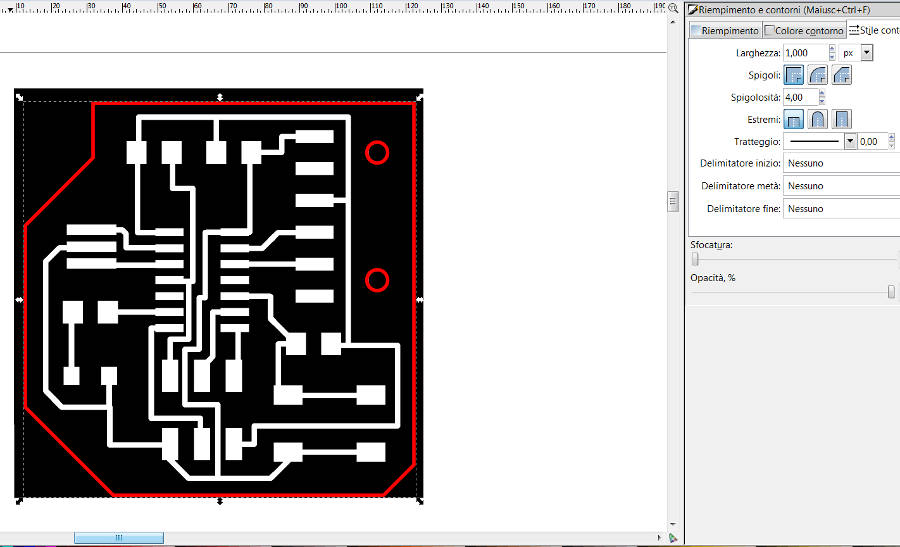
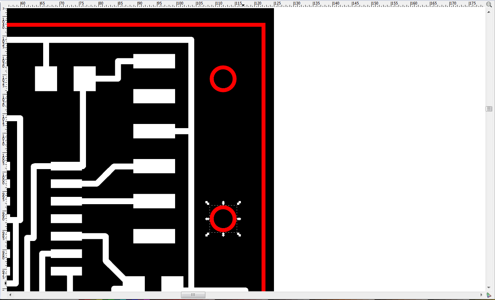
I decided to test some not-square cuts and a couple of holes, to test the machine and to glue the connector.
I followed the same process I did here for the exercise 04.
The engrave process. I think the green color is because of copper's oxides. It took less than 20 minutes, and i'm sure there is still the possibility to optimize it.
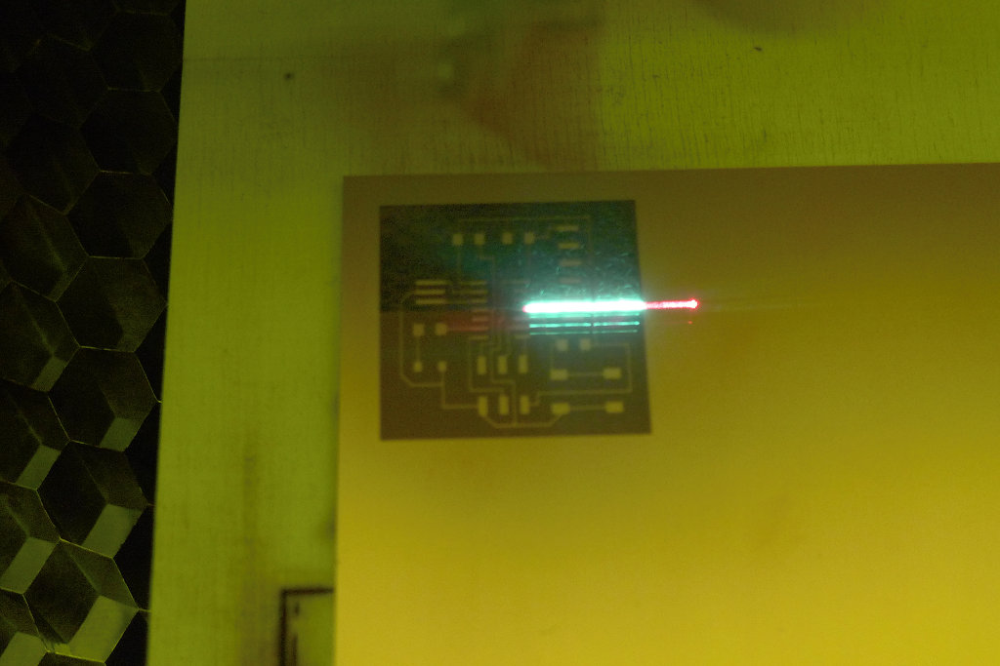
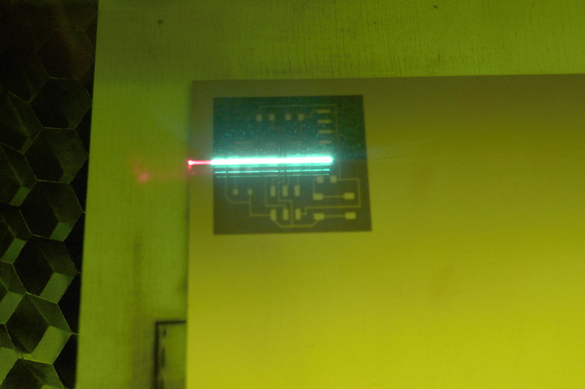
The cutting is very fast. It's important to don't take out the piece as soon as it's finished and let the filter works for a while.
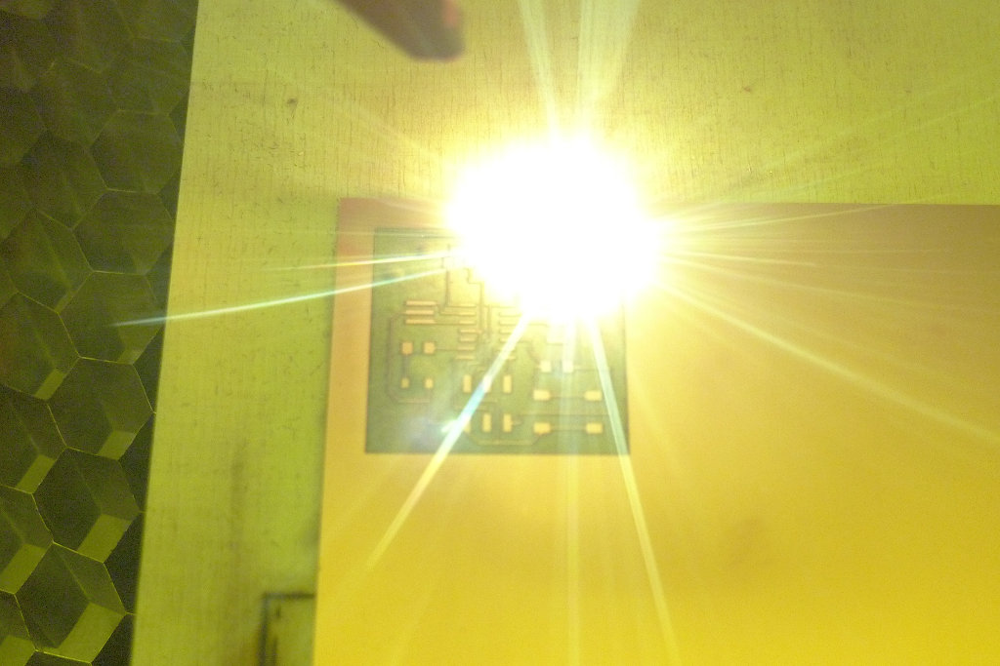
the final result before being polished.
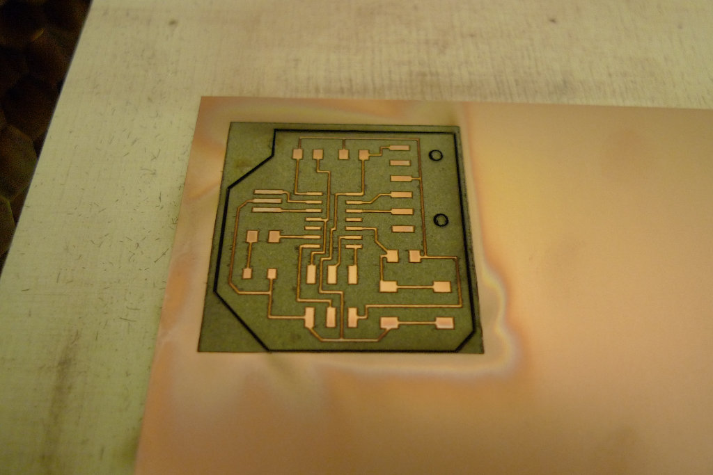
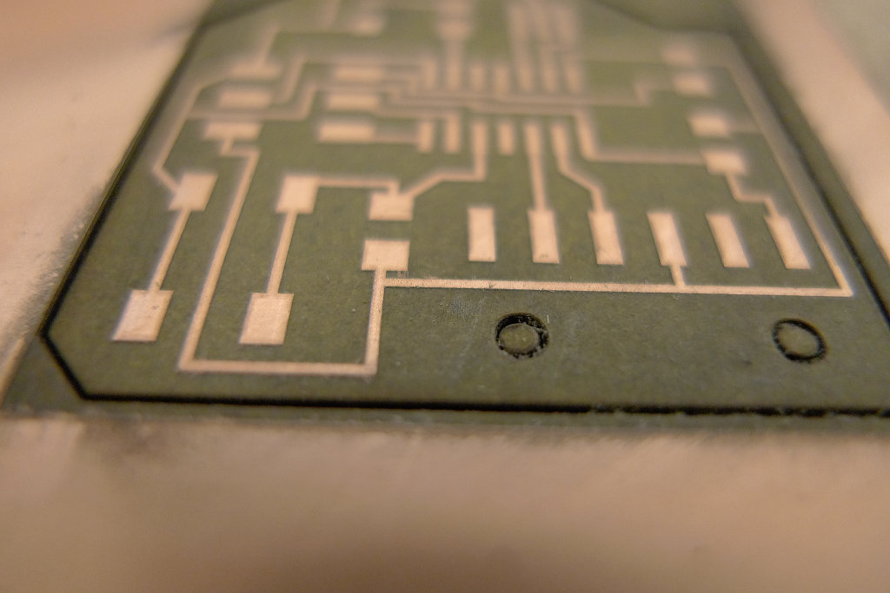
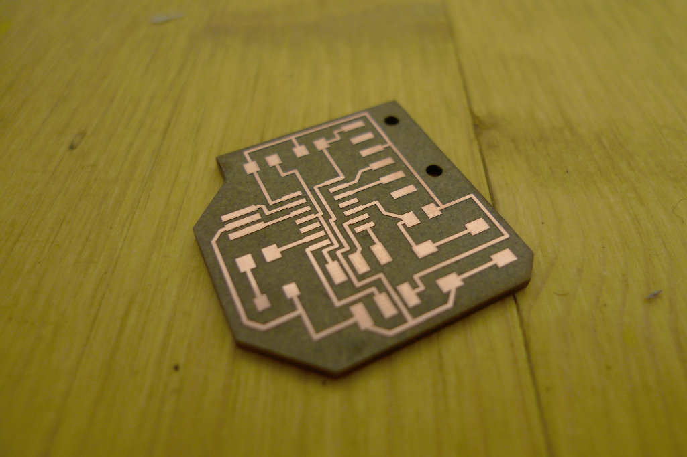
The tinning process. It's done just with the soldering tin and pen.
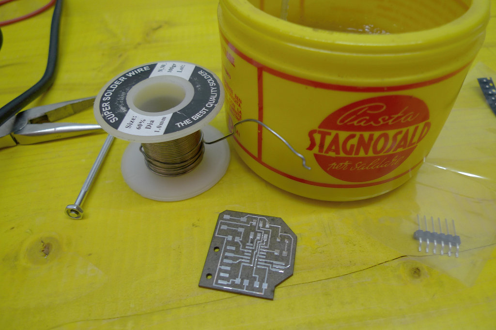
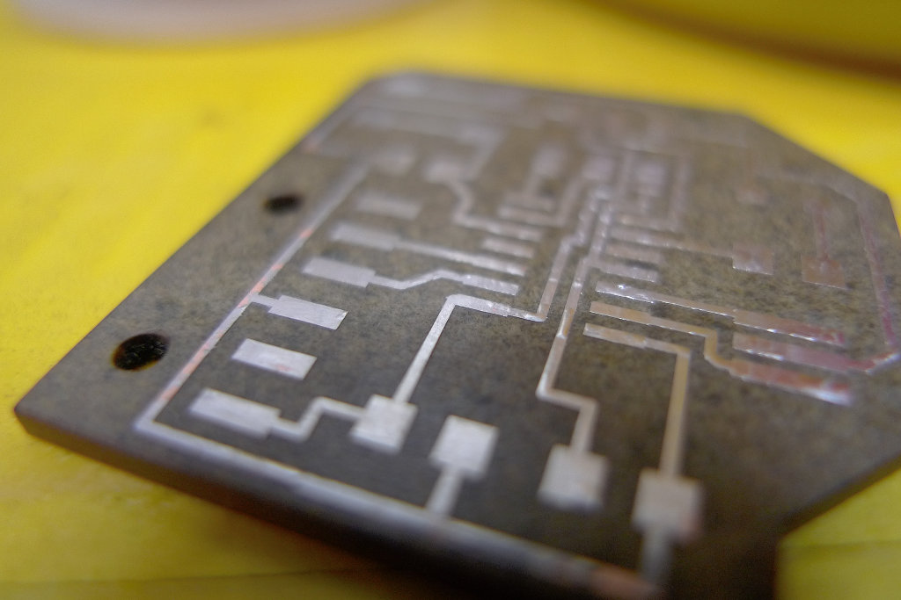
the final board
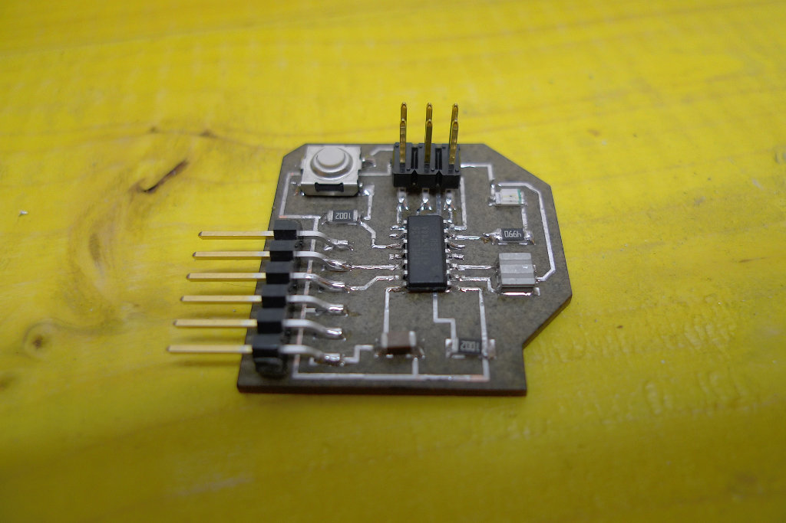
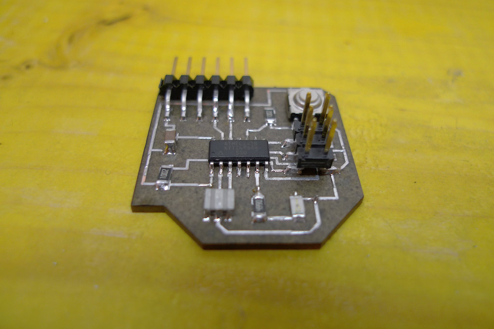
I used the two hole i cut before to inject some hot glue to keep the connector more stable.
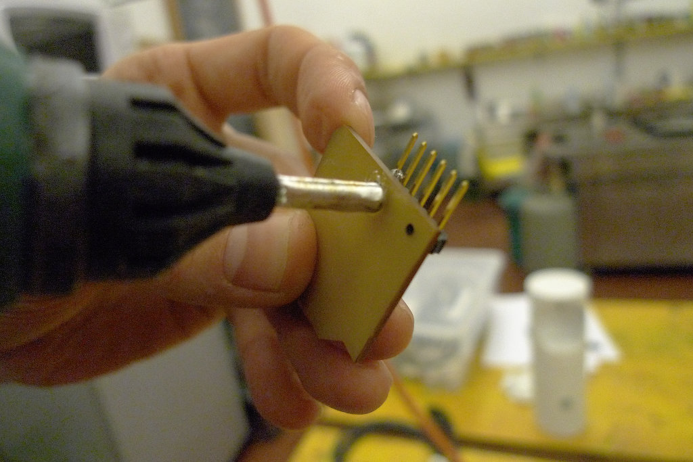
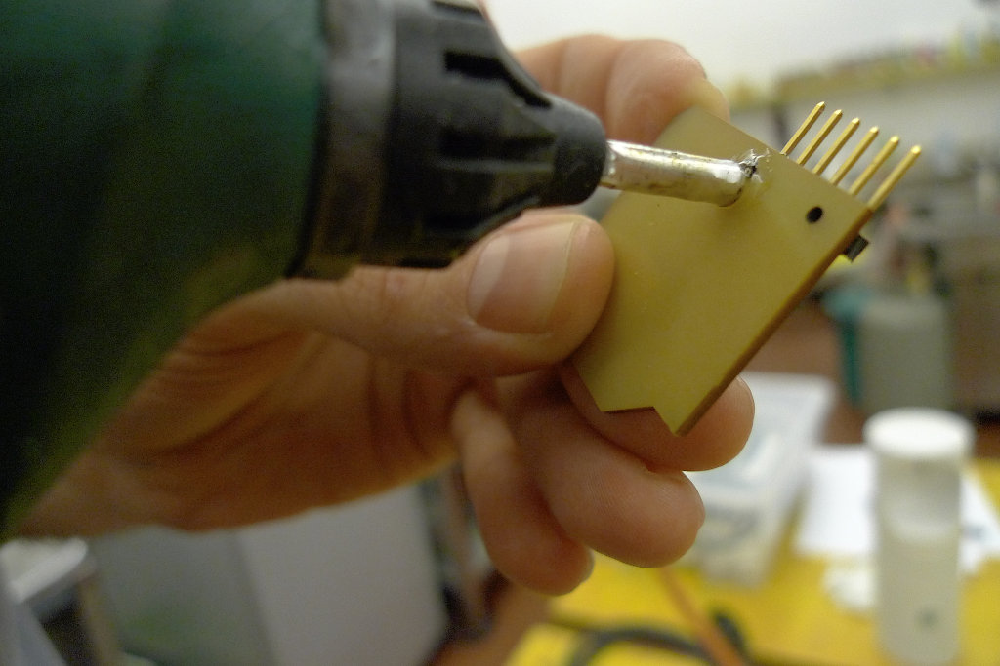
This time it was easier to solder everything. My only doubt is about the polarity of the led, cause it's not marked on the package and I'm not sure it's soldered properly. We will see as soon as I start to code.
My next test is to check if it's possible to do this process with the fab modules.
{kind=link}